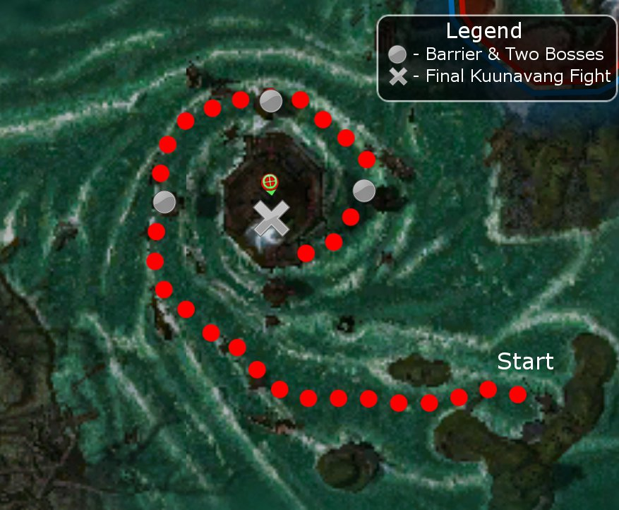

Elite: Enraged Smash
M10
Unwaking Waters
◉ Mission Map

Click to enlarge · Local cache · Wiki
Summary (click to expand)
The great dragon Kuunavang has been corrupted by Shiro . Defeat Kuunavang to remove Shiro's control and seek its advice on what is to come. This mission features two parties working together to defeat Kuunavang.
Region: Path choice · Mission: 10 of 13 · Type: Cooperative
Path: Both paths rejoin
✓ Objectives
Defeat Kuunavang.
- Weaken Kuunavang to destroy the barrier.
- Continue to weaken Kuunavang until the next barrier is destroyed.
- Continue weakening Kuunavang until the last barrier is destroyed.
- Defeat Kuunavang.
→ Walkthrough
In this mission, you have to defeat the corrupted version of Kuunavang in the Harvest Temple in the heart of the Jade Sea's whirlpool. Your path follows a downward spiral blocked by three gates, each powered by the dragon — they can be breached by dealing enough damage to her (the first gate opens when she reaches 75% health, the second at 50%, and the third at 25%). Each gate is blocked by groups of Afflicted, usually led by a boss, and Kuunavang cannot move back beyond an opened gate, forcing the parties to pursue her if she flees.
There are several challenges unique to this mission:
- Kuunavang can sometimes be out of melee range during her phases until you reach the temple.
- She is semi-resistant to interrupts, taking sometimes multiple interrupts to interrupt a skill.
- She has several deadly skills, notably Corrupted Dragon Scales (creating six creatures) and Dark Chain Lightning (which hits an initial target for 300 damage and will then hit subsequent targets, diminishing in force by 10% with each hit).
In addition, this is the second two-party mission (after Vizunah Square). You will not be able to see the health bar of the other party, but skills that affect other allies will benefit both groups. If no party joins from the other outpost, your allies will consist of eight henchmen. You cannot use resurrect skills on the other party and the two Resurrection Orbs that can be found during the mission cannot resurrect members of the other party.
You have plenty of time to obtain the Master's reward for the mission: the right team can finish it in less than five minutes, even in hard mode with henchmen from the other side. Even with henchmen from both sides, you should be able to finish in less than the required fifteen minutes if you proceed carefully.
Reaching the temple
After the initial gate opens, clear out the initial Afflicted mobs and then attack Kuunavang. Stay spread out to avoid AoE damage. Keep attacking until the first gate opens and she leaves; if you have enough firepower, you can damage her enough to open all the remaining gates, and teleport you straight to the temple, skipping all the remaining Afflicted of the mission.
As you approach the next gate, two more groups of Afflicted spawn (the composition varies and the number depends on how many bosses appear with them). Kill the new mobs and cross the gate to find the first Resurrection Orb, which you might want to save for the final battle. Kuunavang will appear again and you must fight her again to open the next gate (and find the final Resurrection Orb). As you follow the path, two more groups of Afflicted will spawn. You can destroy them and then attack the dragon to drop the last gate or you can wait for Kuunavang to fly back towards you; as long as you stay near the gate, you will not trigger the last group.
Lowering her health to near zero will trigger a cinematic, after which you will be transported to the temple and the final battle.
The biggest danger during this part of the mission is trying to attack Kuunavang and the Afflicted at the same time. If the dragon overlaps with the other foes, retreat quickly to the outside of the path, so you are out of her reach. Finish off the Afflicted before confronting her again.
Harvest Temple
The final battle takes place in the Harvest Temple against Enraged Kuunavang alone. Melee characters will finally be able to attack the dragon, but there is no room to maneuver and both parties will be at risk of her massive AoE damage skills, so put up protection skills as quickly as possible. Keep spread out and try to interrupt as many of her skills as possible. If she summons Corrupted Scale creatures, eliminate them before returning your attention to the dragon; you will need to call them as targets, otherwise heroes and henchmen from both sides will ignore them. Leaders of henchmen-only parties should be prepared to flag and re-flag their party repeatedly to keep them out of harm's way.
The mission ends when you deplete the dragon's health to near zero again.
★ Bonus
See walkthrough and objectives for bonus details (if any).
◆ Hard Mode
Defeating Kuunavang in hard mode is only slightly more difficult, since she is not much stronger. However, the Afflicted mobs are likely to take more time to take down, so proceed more carefully.
☠ Bosses & Elites
Elite: Broad Head Arrow
Elite: Ray of Judgment
Elite: Order of Apostasy
Elite: Stolen Speed
Elite: Mind Burn
Elite: Shadow Form
Elite: Weapon of Quickening
✦ Tips & Notes
Skill recommendations
- General recommendations
- Enchantment-based builds are vulnerable to Afflicted Necromancers, Afflicted Mesmers, and Kuunavang's Corrupted Breath. Afflicted that deal physical damage can also remove enchantments when enchanted with Afflicted Necromancer's Order of Apostasy.
- Barbs combines well with the physical damage of ranger henchmen from the Luxon outpost.
- If entering from the Kurzick outpost, consider not bringing Signet of Spirits, since Aeson of the Luxon party (if no player-Luxon party joins) uses it.
- Binding Rituals such as Shelter and Displacement can easily provide protection to both parties provided the caster has a Soul Twisting-based build.
- Confronting Kuunavang
- Ranged attacks and skills are usually easier to consistently deal damage Kuunavang during the first phase of the mission.
- Armor-ignoring damage and life stealing bypass Kuunavang's high armor rating.
- Kuunavang's large amount of health makes Spoil Victor especially valuable.
- Bring ways to mitigate her Dark Chain Lightning.
- Pain Inverter will reflect damage.
- Minions and spirits can absorb some of the damage.
- Consider other damage mitigation skills, e.g. Shelter.
- Blindness prevents her from hitting the first target.
- Enfeeble helps reduce her damage.
- Corrupted Scales are considered spirits:
- They are immune to hex spells and all conditions except for burning.
- They are vulnerable to anti-summon skills (e.g. Banish or Consume Soul) and will trigger effects that depend on the presence of spirits.
- Interrupting Kuunavang
- Kuunavang is partially resistant to interrupts.
- To maximize your chances of preventing the dragon's skill use, take multiple interrupts and daze Kuunavang.
- She is also vulnerable to Choking Gas.
- A Dissonance spirit can interrupt Kuunavang every two seconds.
- Two-party considerations
- Bring skills that can affect multiple allies. Wards and Wells are especially useful in the small battleground for the final confrontation.
- Party healing helps, e.g. Heal Party or Breath of the Great Dwarf.
Notes
| The Guild Wars 2 Wiki has an article on Unwaking Waters. |
- Groups from the Kurzick and Luxon outposts can usually synchronize their entry by pressing the Enter Mission button at close to the same time.
- You will only encounter three of the Afflicted bosses during the mission. If you are attempting to capture skills you may need to repeat it a number of times.
- Until the first barrier is brought down, enough Afflicted reinforcements will spawn every two minutes (at the barrier) in order to maintain a group size of seven. Similarly, enough reinforcements will spawn at the second barrier to keep the opposition at five foes.
- At each barrier, the composition of the group will remain the same for the remainder of the mission but will differ next time you play.
- These reinforcements do not drop loot.
- The Kurzick party leader will have the spoken dialogue during the end cinematic unless there is no human player from that side.
- After completing this mission, your party will be taken to Harvest Temple.
- If there are players on both sides then skipping the cutscenes without the other party's approval is not possible.
- If you approach her from the upper cliffside she will be in melee range, however if you approach from the lower cliffside closest to her, she will not.
- Completion of this mission will fill in page #9 of the Shiro's Return storybook.
- You can increase your Kurzick faction cap limit by 7,000 by completing this mission along with Arborstone and The Eternal Grove. This increase can only be applied once per account.
- You can increase your Luxon Faction cap limit by 7,000 by completing this mission along with Boreas Seabed and Gyala Hatchery. This increase can only be applied once per account.